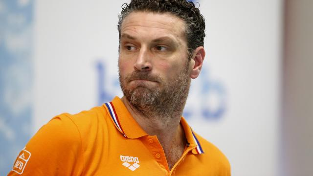

Havenga tot Tokio 2020 bondscoach waterpolosters
Arno Havenga is ook de komende vier jaar bondscoach van de Nederlandse waterpolodames. De 41-jarige Rotterdammer is met de KNZB tot overeenstemming gekomen over verlenging van zijn contract tot de Olympische Spelen van 2020 in Tokio.
Havenga miste dit jaar met de waterpolosters op een haar na de Spelen in Rio de Janeiro. Zijn ploeg verloor in de kwartfinale van het OKT in Gouda van Spanje en greep zo net naast een olympisch ticket.
"Natuurlijk was ik teleurgesteld dat we niet naar Rio gingen", vertelt de coach woensdag op de website van de KNZB. "Maar ik ben trots op de groei van het team en de prachtige resultaten die we de afgelopen jaren hebben behaald."
De waterpolodames veroverden dit jaar zilver op het EK. Ook op het WK van vorig jaar was de ploeg goed voor zilver en op het EK van 2014 eindigden de Oranje-vrouwen als tweede.
Havenga heeft de waterpolosters sinds eind 2013 onder zijn hoede. Hij volgde destijds de ontslagen Mauro Maugeri op.
Cats
Ook André Cats, de nieuwe technisch directeur van de zwembond, is blij met de contractverlenging van Havenga.
"Met Arno hebben we een uitstekende coach met passie voor waterpolo", zegt Cats. "Met dit programma onder zijn leiding ben ik er van overtuigd dat we blijven meedraaien in de wereldtop en meespelen om de podiumplaatsen."
De waterpolodames komen eind dit jaar nog in actie in de World League. Oranje is in de poule ingedeeld bij Griekenland en Rusland. Op dinsdag 29 november wacht in Athene de eerste groepswedstrijd tegen Griekenland.
Eerder verlengde Robin van Galen zijn contract als bondscoach van de Nederlandse waterpolomannen al. Ook hij gaat door tot de Spelen van 2020.
Volgend nieuws bericht